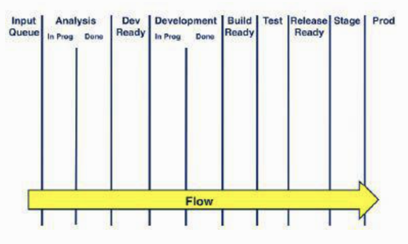
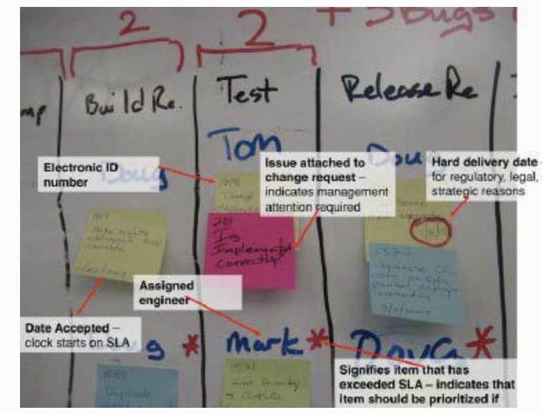

Source: Kanban, Successful Evolutionary Change for Your
Technology Business by David J. Anderson

Outline of workflow with added buffers
Definition:
Kan-ban is a Japanese word that literally means "signal card" in
English. In a manufacturing environment, this card is used as a signal
to tell an upstream step in a process to produce more. The workers at
each step in the process are not allowed to do work unless they are
signaled with a kanban from a downstream step.
The signal to pull new work is inferred from visual quantitiy of
work-in-progress subtracted from some indicator of the
limit (or capacity).
Most important principles required to make quality software
development
Visualize Workflow
Limit Work-in-Progress
Measure and Manage Flow
Make Process Policies Explicit
Use Models to Recognize Improvement Opportunities
Why should we use kanban?
Focus on Quality
Reduce Work-in-Progress
Deliver Often
Balance Demand against Throughput
Prioritize
Attack Sources of Variability to Improve Predictability
Implementing kanban
Decide the outer boundaries of the kanban system. It is often best
to limit this to the immediate span of political control.
Model the card wall to align with the boundary decision made
regarding limiting WIP and visualizing work.
Define work types and model how their work flows. Some types of
work may require every step in the flow.
Design the work item card to have enough information to faciliate
self organization for pull and to enable team members to make good
quality decisions with respect to risk based on work item type,
service-level agreements, and classes of service.

Anatomy of an item card
Use an electronic tracking tool if the team is distributed.
Examples of electronic tracking tools are Lean Kit Kanban,
Agile Zen, Target Process, Silver Catalyst, RadTrack, Kanbanery,
VersionOne, Greenhopper for Jira and Flow.io.
Discuss methods for handling concurrency in
activites and choose how to model and visualize them
Discuss methods for handling activites that do not need to follow a
specifially ordered flow and choose how to model and visualize
them.
Coordinating with kanban systems
Using both physical card wall and an electronic tracking system.
Having regular meetings will reduce the coordination cost for those
meetings and improves attendance.
Daily standup meetings should be used to discuss issues,
impediments, and flow.
Daily standups also encourage a culture of continous development.
Grooming the backlog with regular triage to reduce its size
improves the effectiveness and efficiency of prioritization
meetings.
Escalation paths and policies should be clearly defined.